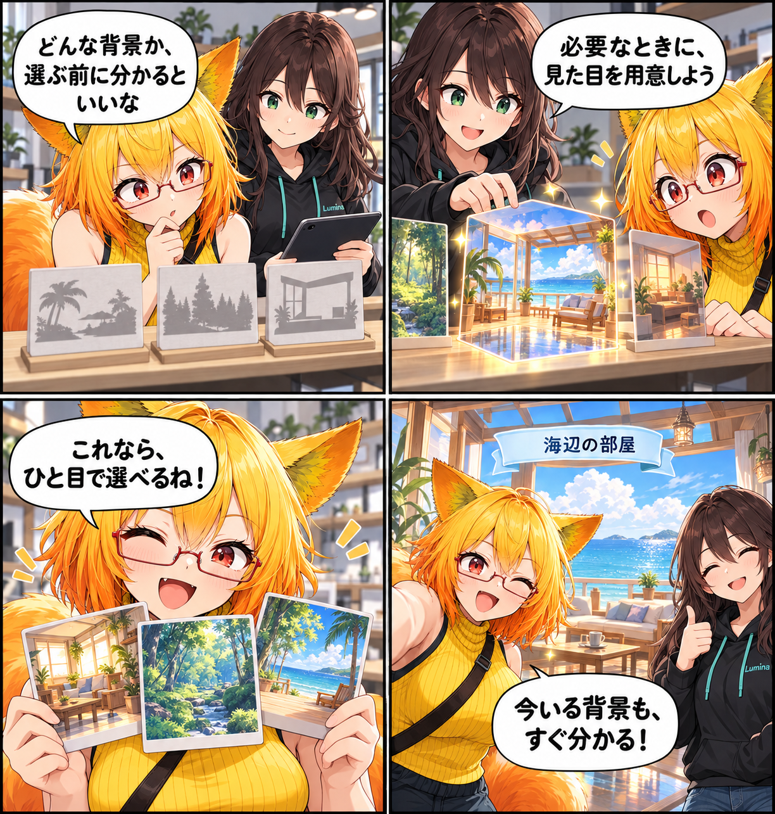

2026.10.26 / Development Log
背景を選ぶ前に、見た目が分かる日
VCI背景を選ぶ前に、どんな景色かをつかみやすくしました。背景を有効にしたときにサムネイルを生成してライブラリのカードへ反映し、今選んでいる背景名も確認しやすくしています。
今回は development（開発進捗） です。集計期間は2026-10-25 03:00:00 JSTから2026-10-26 02:59:59 JST、参照ブランチはViewerの
main です。集計終了時点のHEADは 02b7fd203d8ab95eb6c61053e173848483728b61、期間内コミットは3件でした。未コミット差分は対象期間の実績と確認できないため含めていません。
カードに、景色の手がかりを
VCI背景を有効にしたとき、その背景のサムネイルを生成して背景ライブラリのカードへ反映するようにしました。文字だけで候補を追うのではなく、景色の雰囲気を手がかりに選べます。
必要なときに生成して、次は使い回す
サムネイルは背景ごとにキャッシュし、必要になったときに生成します。カードの更新経路と待機処理も整え、読み込みや再描画の途中に表示が取り残されないようにしました。
景色の光と、今いる場所もつなぐ
背景を有効にする際には、その景色に対応するキューブマップ反射も生成して利用します。反射用キューブマップは512pxへ調整し、選択中の背景名はヘッダーでも確認できるようにしました。非アクティブな通知を不用意に消さない修正も同じ集計期間に入っています。
4コマの裏話
今回は、無地だった小さな背景カードが景色を見せてくれる寸劇です。カードで雰囲気を比べ、最後に選んだ景色の名前を確認する流れにしました。
まとめ
背景の選択は、スタジオの空気を決める入口です。選ぶ前に見えること、選んだ後に分かることをそろえて、景色づくりへ気持ちよく入れるようにしていきます。
本日のひとこと
選ぶ前に見えると、背景づくりはぐっと楽しい。